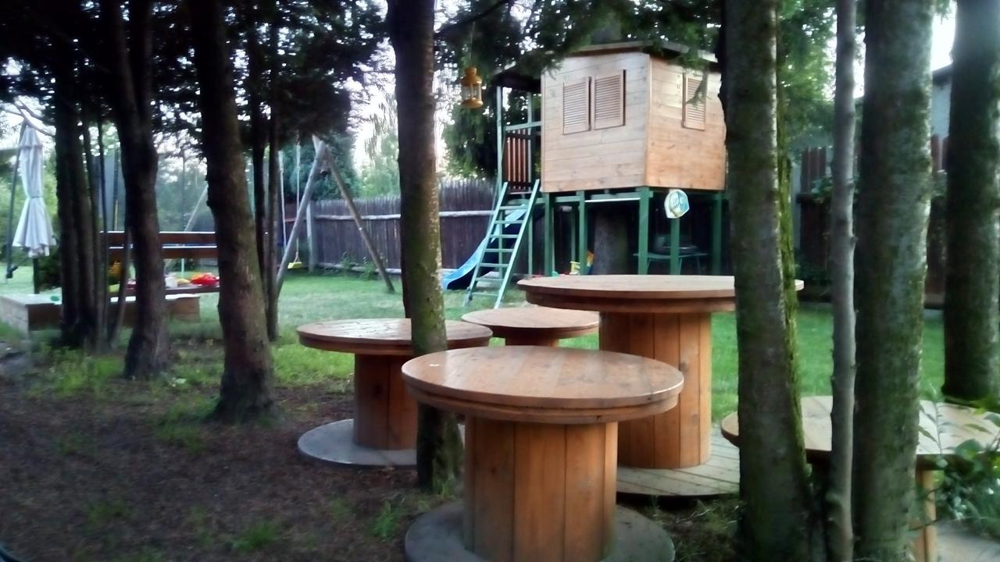

O mnie
Skoro tu zajrzałeś, to chcesz się dowiedzieć czym się zajmuję i czy w ogóle warto w przyszłości zaglądać na mojego bloga. Myślę, że się nie zawiedziesz wpisami, ale ocenisz to dopiero jak je przeczytasz (do czego serdecznie zachęcam). W miedzy czasie, skoro już tu jesteś, przeczytaj te kilka słów o mnie.
Nazywam się Maciej Kusz, niektórzy znajomi wołają do mnie maQ lub maku choć nie jest to regułą. Urodziłem się w 1982 roku, a więc już kilka wiosen mam za sobą. Prywatnie mąż i ojciec 2 dorastających chłopaków. W wolnych chwilach, poza spędzaniem czasu z rodziną, spędzam go na własnoręcznym robieniu różnych rzeczy w domu i jego okolicy, czyli potocznie DIY (Do It Yourself). Jednym z przykładów może być poniższe zdjęcie:

Można powiedzieć, że DIY jest moim hobby, które pozwala mi się oderwać od ekranu i wyciszyć oraz być kreatywnym nie tylko przy klawiaturze.
Ukończyłem (z wyróżnieniem, choć do tej pory zastanawiam się jak to się w ogóle udało) Politechnikę Śląską w Gliwicach na kierunku Elektroniki i Telekomunikacji (specjalność Optoelektronika).
Zawodowo, jak zapewne się domyślasz, jestem testerem oprogramowania.
Swoją przygodę z testowaniem zacząłem w maju 2008 roku (tuż przed obroną pracy magisterskiej). Początkowo były to głównie testy manualne oraz przygotowywanie wszelkiej maści dokumentacji (np. instrukcji użytkownika, raportów z testów, procedur systemowych, itp.).
Gdzieś w okolicach 2011 roku zacząłem interesować się automatyzacją testów oraz pierwsze próby w tym temacie. Początkowo było to bardzo chaotyczne, np. proste skrypty nagrywane przez Selenium IDE. Kilka przygód z AutoIt oraz pierwsze w pełni zautomatyzowane testy wydajności napisane w LoadRunner.
Pracując w tej samej firmie, udało mi się ukończyć podyplomowe studia na kierunku IT w biznesie w PJATK (w owym czasie znana jako PJWSTK). Pozwoliło mi to na przeżycie krótkiego epizodu jako analityk biznesowy, jednak nie czułem się dobrze w tej roli.
Od 2012 (po zmianie pracy) przyszła pora na pełną automatyzację testów. Nie znaczy to jednak, że testy manualne zostały całkowicie porzucone. Po prostu, stały się krokiem pośrednim podczas pisania testów automatycznych. Niestety wykorzystywane narzędzie było (i nadal jest) dosyć niszowe na naszym rynku i bardziej kojarzyło mi się ze środowiskiem czysto akademickim niż rynkiem IT, który w owym czasie zaczynał przeżywać rozkwit. Tym narzędziem było LabView. O ile do prototypowania jest to bardzo ciekawe narzędzie, jednak brak wsparcia przez systemy kontroli wersji dla plików tworzonych przez to narzędzie, uniemożliwia robienie choćby review czy też podglądanie zmian pomiędzy wersjami (pliki z rozszerzeniem vi są widziane przez systemy kontroli wersji jako pliki binarne). Dodatkowo (w owym czasie) praktycznie nie było ofert pracy dla osób ze znajomością tego narzędzia (obecnie, a piszę to w Q3 2019 roku, takich ofert jest również jak na lekarstwo). Nie chciałem się zamykać na tak niszowe narzędzia i zacząłem się rozglądać za zmianą pracy.
W 2013 trafiłem do Rockwell Automation. O przyjęciu mnie do tej firmy zdecydowała moja wiedza, w kilku dziedzinach:
- podstawy elektroniki (wyniesione jeszcze ze studiów),
- znajomość sieci elektrycznych (posiadałem wtedy uprawnienia SEP do 1 kV, gdyż w trakcie studiów dorabiałem sobie jako elektryk)
- znajomość podstaw sieci komputerowych (ukończone szkolenie Cisco CCNA)
- znajomość programowania w C/C++
Powyższe 4 punkty bardzo mocno wpisywały się w zakres kompetencji oczekiwanych przez firmę. Ponieważ firma bardzo mocno stawiała na rozwój testów automatycznych w Pythonie musiałem się szybko tego języka nauczyć. Okres próbny był dla mnie bardzo stresujący, ale nie dość, że bardzo dużo się nauczyłem, to jeszcze odnalazłem swoją drogę. Już wtedy wiedziałem, że Python będzie językiem, z którym zwiążę się na dłuższą chwilę (a trwa ona do dnia dzisiejszego i podejrzewam, że szybko się nie zakończy).
Podczas blisko 4 lat pracy w w/w firmie miałem okazję sprawdzić się jako:
- tester
- administrator Jenkins’a
- współtwórca bibliotek i narzędzi używanych w testach automatycznych
- autor nowego podejścia do budowy stanowisk testowych, które zostało wykorzystane podczas przeprowadzki Katowickiego oddziału firmy do nowego budynku (tego już nie dotrwałem w firmie)
- współautor prototypu nowego framework’u do testów mającego za zadanie zredukować czas potrzebny zarówno do tworzenia jak i adaptacji testów dla nowych produktów
- test lead odpowiedzialny za cały proces testowania produktu, gdzie w skład wchodziła między innymi koordynacja różnych zespołów testerskich, gromadzenie dokumentacji oraz zarządzenie małą grupą testerów (2-3 osobowe zespoły)
Z różnych względów i pomimo niewątpliwych sukcesów, zdecydowałem się opuścić firmę pod koniec 2016 roku.
Wybór nowej firmy był dosyć trudnym zadaniem, gdyż dostałem aż 3 oferty współpracy. Założenia jakie przyjąłem podczas rekrutacji były następujące:
- możliwość rozwoju
- nie chciałem być kolejnym “klepaczem” testów, bo wiedziałem, że stać mnie na więcej i nie chciałem spędzić 2-3 lat na udowadnianiu, że coś potrafię
- wyższa pensja
Zauważ, w jakiej kolejności podane są powyższe punkty. Finanse były najmniej istotne, choć zależało mi na tym, aby więcej zarabiać, to nie stawiałem ich na 1 miejscu. Zdecydowanie bardziej zależało mi na możliwości rozwoju. Te punkty zdecydowanie przełożyły się na wybór firmy. Wybrałem firmę, która co prawda zaoferowała mi najniższą stawkę ze wszystkich (choć i tak była większa niż w firmie, z którą kończyłem współpracę), ale za to dawała mi stanowisko osoby odpowiedzialnej za stworzenie od 0, framework’u do testów automatycznych oraz jego wdrożenie. Jedyne założenia, jakie zostały mi narzucone to język Python oraz biblioteka Behave. Ponieważ testowane produkty były aplikacjami webowymi, musiałem również użyć Selenium. Framework, który wtedy powstał, miał kilka ciekawych funkcji, między innymi możliwość definiowania kroków w plikach Gherkin, które były innymi plikami Gherkin’a oraz coś co nazwałem Single Page Object Pattern. Postaram się napisać o tym w jednym ze wpisów na blogu, gdyż temat wymaga zagłębienia się w kod.
W kolejnej firmie opracowałem mikro framework do testów aplikacji klienckiej wykorzystującej websocket’y. Najtrudniejsze w tym wszystkim było pogodzenie asynchronicznego serwera websocket’ów z synchroniczną częścią z biblioteki Unittest oraz auto generacja testów. Te tematy postaram się również poruszyć w odpowiednich wpisach na blogu, gdyż i tu bez kawałka kodu, zagłębianie się w temat nie ma sensu.
I tak oto dochodzimy do miejsca, w którym jestem obecnie, czyli do kolejnej firmy, w której odpowiedzialny jestem za przygotowanie oraz przeprowadzenie testów wydajnościowych. Tym razem jest to jedno z najbardziej skomplikowanych zadań, jakim miałem przyjemność się zajmować. Dlaczego? Powodów jest kilka, ale najważniejszym jest to, czego i w jakiej ilości się uczę oraz tego, że kolejny raz miałem szczęście być osobą, która była zatrudniona jako pierwsza do tego zadania. Dzięki temu miałem całkowitą swobodę w kwestiach decyzji co i jak zrobić. Jedyny wymóg, jaki dostałem to implementacja rozwiązania w Pythonie oraz wykorzystanie biblioteki Locust.io. Zapewne zadajesz pytanie w stylu: “Ale jak to? Python do testów wydajnościowych? Przecież to taki wolny język?: No tak to się stało, że wbrew pozorom, takie podejście do tematu miało swoje podłoże w kilku kwestiach, które opiszę w jednym z wpisów na blogu.
Jako ciekawostkę podam, że do obecnej pracy dostałem się również dlatego, że kilka lat wcześniej wybrałem prace w firmie, która co prawda zaoferowała mi najmniej, ale dała możliwość rozwoju (piszę o tym wyżej). Dlaczego ten wybór miał wpływ na obecną pracę? Dlatego, że osoba, która wtedy mnie rekrutowała, poznała mnie i moje motywacje dosyć dobrze. W obecnej pracy ta sama osoba była HR Menadżerem i jak tylko dostała zadanie zrekrutowania kogoś, kto zna się na testowaniu w Pythonie, to byłem 1 osobą o której pomyślała. Pomyślisz pewnie, że dostałem tę pracę dzięki “znajomości”. Otóż zdziwisz się, gdy powiem Ci, że po 1 rekrutacji, z tą osobą przez prawie 3 lata nie zamieniłem ani słowa.
Na zakończenie tego prawie życiorysu, zapewne zastanawiasz się jak wyglądam? Już rozwiewam Twoje wątpliwości.
Jeśli interesuje Cię coś więcej, to zapraszam do kontaktu przez dowolne kanały komunikacji, które wyszczególnione są po prawej w sekcji Linki.